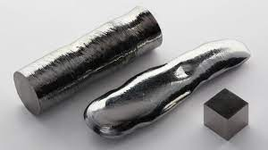

kabuğunda en nadir bulunan elementlerden biri olan renyumun kimyasal formülü “Re”, atom numarası 75, atom ağırlığı 186,2 gr/mol, yoğunluğu 21,02 gr/cm3’tür. İridyum, osmiyum ve platinden sonraki en yoğun dördüncü elementtir. Erime noktası 3186 derece, kaynama noktası 5630 derecedir. En yüksek kaynama noktasına ve üçüncü en yüksek erime noktasına sahip metaldir. Periyodik cetvelin 7-B grubunda yer alan bir ağır geçiş metalidir. Gümüşümsü beyaz renkli bu element, yüksek kaynama noktası ve ısıya dayanıklı kristal yapısı sebebiyle mükemmel bir refrakterdir [1].
geri dön
